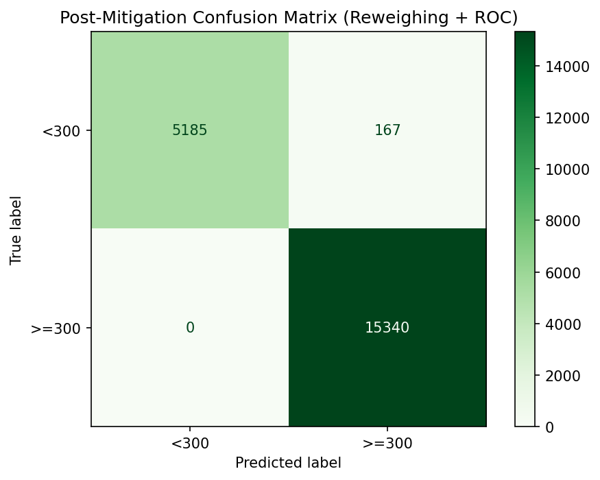
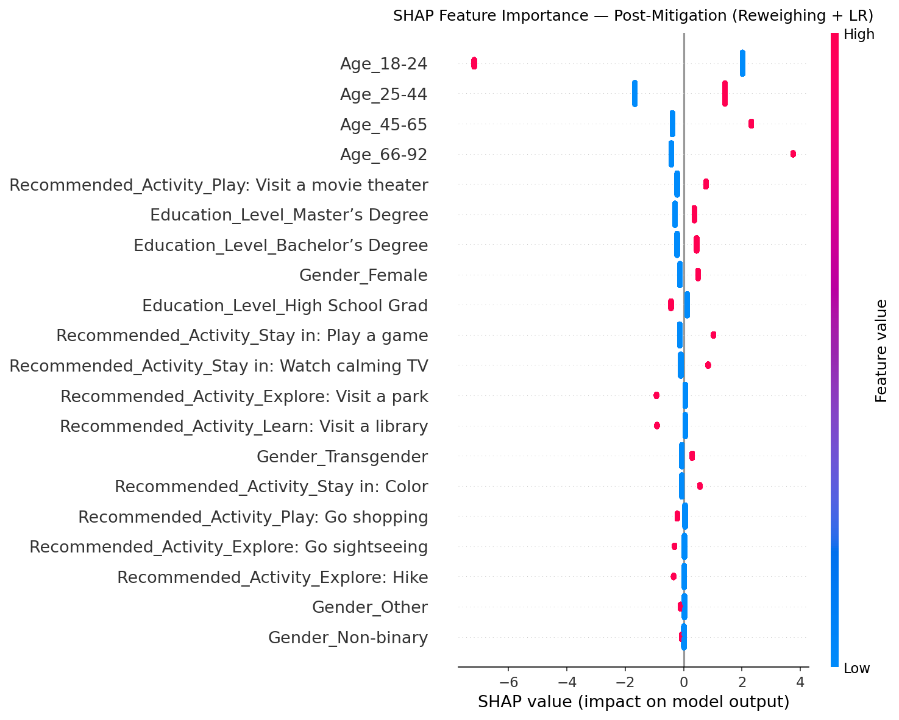
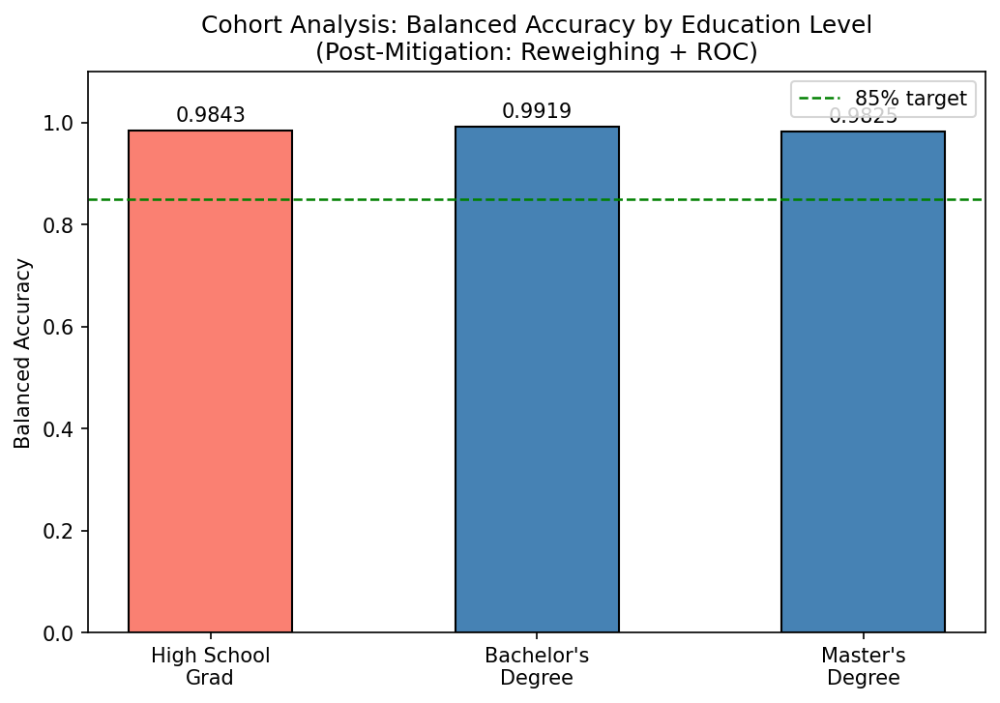

Model Card - IDOOU AI Budget Predicter
Model Details
-- Budget Predictor AI is a binary classification model that predicts whether an IDOOU app user has a budget of $300 or more, based on demographic features including age group, gender, and education level. Its output is used to personalize activity recommendations within the IDOOU mobile application.
-- The model is implemented as a Logistic Regression classifier, trained on a synthetic dataset of 300,000 IDOOU user experience study participants.
-- Developed by the IDOOU engineering team for commercial deployment within the IDOOU app ecosystem, including hotel smart concierge integrations and autonomous vehicle dashboard deployments.
-- Known limitation: The model inherits strong bias from the training data. A bias mitigation strategy must be applied before deployment to avoid discriminatory outcomes for users with High School-level education.
Intended Use
-- Primary intended use: Predict whether an IDOOU user has a budget >= $300 to drive personalized activity recommendations within the IDOOU mobile application and its integrated deployments (e.g., hotel concierge systems, autonomous vehicle dashboards).
-- Primary users: IDOOU's internal recommendation engine. The budget prediction is consumed programmatically by the app and is not surfaced directly to users as a score or label.
-- Interpretability: IDOOU should surface the key factors influencing a user's predicted budget tier (e.g., age group, education level) so users can review and correct their profile data if the prediction seems wrong. A "Does this look right?" prompt is recommended after a budget prediction is made, supporting a human-in-the-loop design.
-- Privacy: Only features explicitly provided or consented to by the user should be used as inputs. Users who choose not to provide demographic information should receive a fallback recommendation path that does not rely on the budget predictor.
-- Fairness: The model must not be deployed without a bias mitigation layer. Predictions for High School graduates are severely disadvantaged relative to Bachelor's/Master's degree holders and require post-processing correction before production use.
-- Out-of-scope uses: This model should not be used for credit scoring, financial eligibility screening, employment decisions, or any purpose outside personalized activity recommendation within IDOOU and its licensed integrations.
Factors
-- Education Level (protected attribute): High School Grad vs. Bachelor's/Master's degree holders. This is the primary fairness axis for this model — the dataset and model exhibit extreme disparity between these groups.
-- Age Group: Users are binned into four groups (18-24, 25-44, 45-65, 66-92). The 18-24 cohort is strongly associated with low budgets and is the largest group in the dataset, creating representation imbalance.
-- Gender: While Female users are slightly overrepresented in the dataset, gender shows near-zero correlation with budget and is not a meaningful predictive factor.
-- Intersectional consideration: Age and education are correlated (most 18-24 users are High School graduates), meaning the model's bias may compound for young, lower-educated users. Intersectional evaluation across age x education subgroups is recommended before deployment.
Metrics
-- Primary performance metric: Accuracy and balanced accuracy. Balanced accuracy is preferred as it accounts for class imbalance and is used to select the optimal classification threshold. Logistic Regression achieved 99.79% accuracy and ~99.8% balanced accuracy at a threshold of 0.28 on the test set.
-- Fairness metrics (AIF360): Statistical Parity Difference (ideal: 0), Equal Opportunity Difference (ideal: 0), Average Odds Difference (ideal: 0), and Theil Index (ideal: 0) are all reported. These metrics are disaggregated by education level (High School Grad vs. Bachelor's/Master's).
-- Confusion matrix: Used to assess false positive and false negative rates. The model produces fewer false positives (3) than false negatives (41) on the test set, meaning it more often under-predicts a high budget than over-predicts one.
Training Data
-- The model was trained on a synthetic dataset of 300,000 IDOOU app users collected via a user experience study. Features include gender, age (binned: 18-24, 25-44, 45-65, 66-92), and education level (High School Grad, Bachelor's, Master's). The label is binary: budget >= $300 (1) or < $300 (0). Rows with missing values were dropped. Users who did not graduate high school or had "Other" education were excluded to focus the fairness analysis on the defined privileged/unprivileged groups. The dataset was split 50/30/20 (train/validate/test) using AIF360's BinaryLabelDataset.split; 50% (150,000 samples) was used for model training, with the validation set reserved for future threshold tuning and hyperparameter selection.
Evaluation Data
-- The model was evaluated on a held-out test set comprising 20% of the full dataset (~60,000 samples after filtering), drawn from the 50/30/20 split. The test set reflects the same demographic distribution as the full dataset, including the class imbalance and education-level bias present in the training data. The validation split (30%) was not used for final evaluation and remains available for further model selection and fairness stratification.
Quantitative Analysis
-- Fairness metrics BEFORE bias mitigation (Logistic Regression baseline, threshold=0.2800):
-- Statistical Parity Difference: -0.9925 (ideal: 0; acceptable range [-0.1, 0.1])
-- Equal Opportunity Difference: -1.0000 (ideal: 0)
-- Average Odds Difference: -0.5126 (ideal: 0)
-- Theil Index: 0.0020 (ideal: 0)
-- Balanced Accuracy: 0.9984
--
-- Fairness metrics AFTER bias mitigation (Reweighing + Reject Option Classification):
-- Statistical Parity Difference: -0.9536
-- Equal Opportunity Difference: 0.0000
-- Average Odds Difference: 0.0031
-- Theil Index: 0.0031
-- Balanced Accuracy: 0.9844
--
-- Focus metrics — Average Odds Difference and Theil Index:
-- The Theil Index measures overall inequality of benefit distribution. It was near 0 before mitigation (0.0020) and remains near 0 after (0.0031), confirming that at the aggregate level, benefit is distributed equitably.
-- The Average Odds Difference improved from -0.5126 to 0.0031, moving substantially closer to the ideal value of 0. This means the gap between true positive rates and false positive rates across education groups has been meaningfully reduced by the mitigation strategy.
-- The Statistical Parity Difference and Equal Opportunity Difference remain negative because High School graduates are genuinely rare in the high-budget label even in the ground truth — post-processing can adjust boundary decisions but cannot fully overcome a structural imbalance in the training distribution. Collecting more representative data and applying pre-processing reweighing earlier in the pipeline are the recommended next steps.
Results of the AI model after applying the bias mitigation strategy



Ethical Considerations
-- The IDOOU Budget Predictor is designed to personalize activity recommendations by predicting whether a user's budget is $300 or more, based on demographic features including age group, gender, and education level. Users can influence the model indirectly through a human-in-the-loop design: the app surfaces the top factors driving a prediction (via SHAP explanations) and prompts users with a "Does this look right?" review step. This allows users to correct or supplement their profile data — for example, confirming that their age group is not representative of their actual spending habits — before recommendations are finalized.
-- The dataset exhibits significant representation bias: users with High School-level education who have a high budget (≥$300) are severely underrepresented in the training data, meaning the model learns to associate education level directly with budget capacity. This is a form of historical bias — the data reflects systemic patterns in the study population, not necessarily the true distribution of user intent. The model inherits this bias almost perfectly: before mitigation, the positive prediction rate (PPR) for High School graduates was effectively 0%, compared to ~99% for Bachelor's and Master's degree holders.
-- The SHAP interpretability analysis revealed that before mitigation, the two strongest drivers of the budget prediction were Age_18-24 (mean |SHAP| = 2.66) and Education_Level_High School Grad (mean |SHAP| = 1.94). Critically, Age_18-24 functions as a demographic proxy for education level — the 18–24 cohort in the dataset is overwhelmingly composed of High School graduates, so the model uses age as a surrogate for the protected attribute. This means discriminatory outcomes could persist even if the education feature were removed. After applying the mitigation strategy (Reweighing pre-processing combined with Reject Option Classification post-processing), the education features dropped in relative ranking and age group features became the dominant signal, reducing the model's direct reliance on the protected attribute. The Average Odds Difference improved from -0.5126 to 0.0031 (within the ideal range), and the PPR for High School graduates rose from 0% to 3.9%.
-- The applied mitigation meaningfully reduces the gap in true positive and false positive rates between education groups, and is a valid near-term technical remedy given the existing pipeline design. However, the deeper risk of harm remains: High School graduates who genuinely have higher budgets may still receive systematically lower-quality recommendations, and the intersectional combination of being young (18–24) and a High School graduate amplifies this harm further. Any deployment of this model — including in hotel concierge or autonomous vehicle dashboard integrations — must include the mitigation layer and ongoing fairness monitoring.
Caveats and Recommendations
-- The most impactful recommendation is a product design change: IDOOU should ask users directly what budget they have in mind for an activity, rather than inferring it from demographic attributes. Budget intent is directly obtainable from the user at the point of interaction — it is not a latent trait that needs to be predicted. This redesign would eliminate the need for demographic inference entirely, remove the protected attribute from the prediction path, and make the bias mitigation strategy unnecessary. The algorithmic fix applied in this project is a valid patch on the current pipeline, but the root cause of the bias is a design choice, not a data problem.
-- The dataset lacks inclusive representation of High School graduates with high budgets. In the training data, users with High School-level education who spend $300 or more are extremely rare, which means the model cannot learn from sufficient positive examples for this group. This is not correctable through reweighing or post-processing alone — it requires either collecting more representative data from high-budget High School graduates, or redesigning the input flow as described above.
-- The model is predisposed to false negatives: it more often predicts a low budget for a user who actually has a high budget (41 false negatives) than the reverse (3 false positives). For High School graduates specifically, this means the model will systematically under-recommend high-budget activities to users who can afford them, resulting in a degraded experience for this group.
-- Further ethical AI analyses I would apply beyond this project: (1) An intersectional fairness analysis across age × education subgroups (e.g., HS Grads aged 25–44 vs. 18–24) to determine whether the harm compounds at the intersection of these attributes; (2) longitudinal fairness monitoring in production to detect distribution shift — if the real-world user base evolves, the mitigation parameters would need to be recalibrated to remain effective.
Business Consequences
-- Positive Impact: Budget-aware personalized activity recommendations significantly improve user satisfaction, session engagement, and conversion — users receive suggestions that match what they can actually spend, rather than a generic list. This value is achievable whether budget is inferred from demographics (the current model) or collected directly from the user at the point of interaction (the recommended approach). The direct-input path delivers the same personalization benefit more cleanly and without the fairness tradeoffs, making it the stronger foundation for licensed integrations such as hotel smart concierge systems and autonomous vehicle dashboards.
-- Negative Impact: If deployed without the bias mitigation layer — or without addressing the root design flaw of inferring budget from demographics — IDOOU risks systematically providing inferior recommendations to High School graduate users, who would receive a lower-quality product through no fault of their own. When users notice that recommendations do not reflect their actual intent (e.g., a 22-year-old with a high disposable income receiving only low-budget suggestions), they will lose trust in the app and disengage. This is particularly damaging in B2B contexts: a hotel or automotive partner whose guests or passengers receive demographically skewed recommendations could face complaints, reputational damage, and potential regulatory scrutiny under anti-discrimination frameworks. The long-term revenue and brand cost of biased recommendations significantly outweighs the short-term convenience of avoiding a direct budget question.